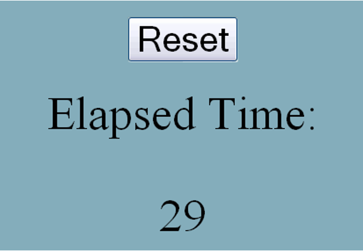
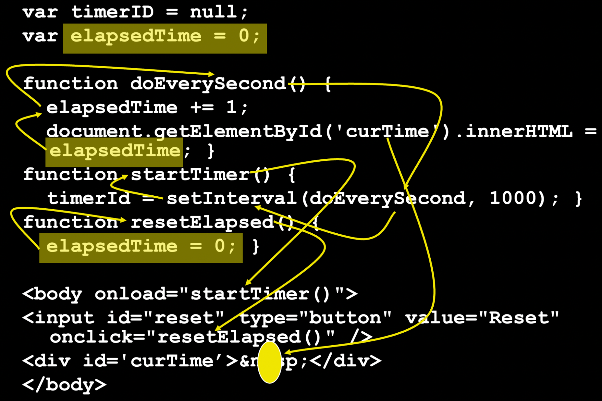

GUIs through Callbacks
To do so, it helps to remind ourselves of the evaluation model in most graphical applications, these days embodied by JavaScript. Suppose we want to make a Web page with a timer that counts up every second, and whose value resets when we click on a Reset button:

One version of the JavaScript code would look as follows:
<script type="text/javascript">
var timerID = null;
var elapsedTime = 0;
function doEverySecond() {
elapsedTime += 1;
document.getElementById('curTime').innerHTML = elapsedTime; }
function startTimer() {
timerId = setInterval(doEverySecond, 1000); }
function resetElapsed() {
elapsedTime = 0; }
</script>
<body onload="startTimer()">
<center>Elapsed time</center>
<center>
<div id='curTime'> </div>
</center>
<center>
<input id="reset" type="button" value="Reset" onclick="resetElapsed()" />
</center>
</body>
There are three parts to the logic here:
- Updating the elapsed time every second.
- Resetting the timer on a button-press.
- Initiating the computation.
These are accomplished as follows:
- When loaded, the Web page invokes startTimer.
- We use elapsedTime to record how much time has elapsed, and create a timer, referenced by timerID. This installs a timer (and records a reference to it in case we need it later, which we don’t in this program) that runs every second (1000 milliseconds). Whenever the timer goes off, it invokes the function doEverySecond. That function increments the elapsed time, and writes the current value into the Web page.
- Finally, the reset button has resetElapsed as its callback. This resets the value of elapsedTime, whose updated value is then shown the next time the display is updated. (In principle, we might want to update the display in this callback too.)
Let us suppose we were given this program to maintain. We want to ask a simple question: what is the value of the Web page’s curTime element? Observe the reasoning we have to perform:
- It is set inside doEverySecond.
- It’s set to the value of elapsedTime.
- That value is incremented in the previous statement.
- That increment takes place every time doEverySecond is called.
- That call takes place in the first argument of setInterval.
- That event is installed by startTimer.
- Which is called on page load.
- Wait. We also need to know the initial value, where elapsedTime is declared.
- Oh, but wait. We also see it reset.
- That happens inside resetElapsed.
- Which is called when the button is clicked.
In short, we have to follow all this:
